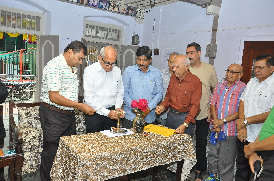
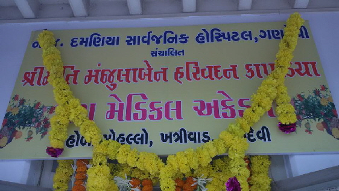

Academy:
M.H.KAPADIA PARAMEDICAL ACADEMY
Damania hospital was facing difficulties getting trained Para Medical Staff for some time. Harivadan Kapadia proposed trustees to start Para Medical School. His proposal was accepted by the trustees and Harivadan Kapadia donated rupees 25 lakhs to start Para Medical School under his wife’s name Shrimati Manjulaben Harivadan Kapadia Para Medical Academy.
The Academy is registered with Para Medical Council of Gujarat and follows their guidelines. The Council guarantees job opportunity to these candidates after successfully completion of the course. The school teaches the following seven different courses at present. More courses will be added in the future
The demand for skilled nurses and other skilled technicians in para medic field is greater than ever! Shrimati Manjulaben Harivadan Kapadia Para Medical Academy program can prepare young students to enter the fast-growing health care field as a nurse and a para medical technician through coursework and quality hands-on training. Our program provides the clinical and professional skills to practice in a variety of health care settings. Graduates of the program are prepared to take the Para Medical Council of Gujarat Licensure Examination). Successful completion of the diploma provides the professional credentials to practice as an entry-level nurse and para medical technician. The Council guarantees job opportunity to these candidates after successfully completion of the respective course.
Acadamy offers below courses
Diploma & Certificate course in FirstAid and practical Nursing
Diploma & Certificate course in Nursing Assistant
Diploma & Certificate course in Medical Laboratory Tehnician
Diploma & Certificate course in X-Ray Technology
Diploma & Certificate course in Dialysis Therapy
Diploma & Certificate course in Female Nursing assistant
Our faculty, administrators and staff are committed to students developing specific vocational knowledge and skills, as well as core student learning outcome in professional development. The Academy encourages students to work to achieve their highest potential while training their career goals. The Academy strives for excellence and quality in everything it does and instills in its students the same aspirations. The academy teaches the following seven courses and plans to add more in the future.
